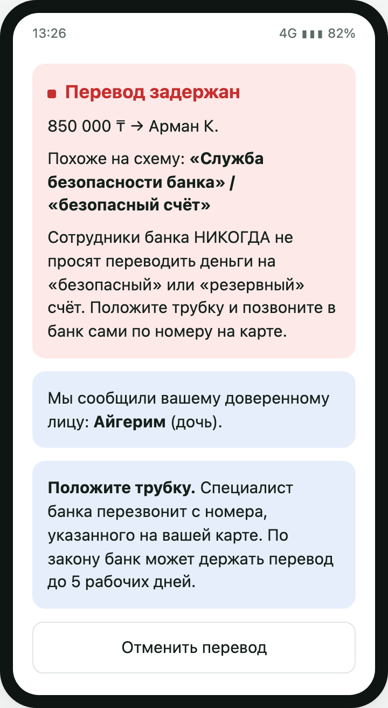
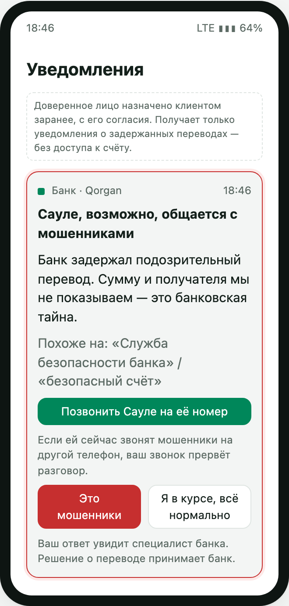
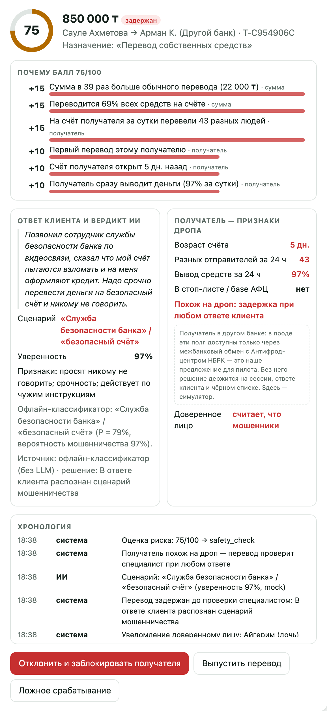

ITU HACKATHON-2026FINTECH CASE · БАНК ЦЕНТРКРЕДИТКОМАНДА [НАЗВАНИЕ]
Qorgan
қорған — защита
850 000₸
Столько Сауле, 67 лет, чуть не перевела «службе безопасности банка». Qorgan остановил перевод — и не помешал ни одному обычному.
01Демо и материалы — в репозитории
Проблема
Мошенник не взламывает банк. Он уговаривает человека.
14:02«Здравствуйте, служба безопасности банка…»
14:09«На вас оформляют кредит. Деньги нужно спасти».
14:17«Не кладите трубку. Никому не говорите».
14:27Сауле сама открывает приложение и переводит 850 000 ₸
Что видит банк
Вход — настоящий.
Пароль — её.
Подтверждение — её.
Обычный перевод.
28 900
дел об интернет-мошенничестве в 2025 — рекорд
Kapital.kz, 21.08.2026
№ 1
схема — звонки и SMS «от имени банка»
finprom.kz, январь–июль 2026
98%
жертв сами отдали деньги и данные
МВД РК, 2024
02Источники: docs/research/RESEARCH.md
Почему этого мало
Переводы во время звонка уже блокируют. Мошенники взяли второй телефон.
приложение банка
Перевод 850 000 ₸
звонка нет
блокировка молчит
телефон № 1
видеозвонок
«Служба безопасности»
телефон № 2 — схема, о которой АРРФР предупреждал в августе 2026
Блок при звонке
видит звонок только на этом же телефоне
Чёрный список АФЦ
дроп попадает туда после жалоб — когда деньги уже ушли
«Блок или пропуск»
либо пропускает обман, либо злит честных клиентов
03Требование о блокировке — по сообщениям СМИ, ноябрь 2025
Решение
Qorgan смотрит не на один сигнал, а на всю картину — и отвечает соразмерно.
Внуку 15 000 ₸0
Аренда 200 000 ₸0 · привычный получатель
Предоплата на OLX60 · похож на дроп
«Служба безопасности»75 · сумма ×39, дроп
Звонок + сигнал оператора100
0305580100
Пропустить
Перевод уходит сразу. Ни одного лишнего экрана.
Предупредить
Показываем причины, клиент решает сам.
Спросить и задержать
«Зачем вы переводите?» Схема или дроп — перевод ждёт специалиста, близкие узнают сразу.
04Баллы — реальные значения из демо (app/qorgan/risk.py)
Объяснимость
Каждый балл — с причиной.
Аналитик не гадает, почему система сработала. Клиент видит те же причины простыми словами. Регулятору есть что показать.
Веса пока экспертные. В пилоте их калибруем на обезличенной истории инцидентов банка.
ПЕРЕВОД T-784B · 850 000 ₸ · 14:27
Сумма ×39 от обычной+15
69% всех денег на счёте+15
43 отправителя за сутки+15
Новый получатель+10
Счёт открыт 5 дней назад+10
97% денег сразу выведено+10
ИТОГО75
ДРОПпроверка человеком
05Все веса: docs/RISK_MODEL.md
ИИ — там, где правила бессильны
Один вопрос: «Зачем вы переводите?»
«Позвонил сотрудник службы безопасности банка, сказал, что на меня оформляют кредит. Надо срочно перевести деньги на безопасный счёт и никому не говорить».
языковая модель, RU/KZ→СЛУЖБА БЕЗОПАСНОСТИ · 95%→перевод ждёт специалиста
А если она соврёт: «маме на лекарства»?
Получатель — дроп. Перевод всё равно ждёт человека. Ответ клиента может только добавить подозрение.
А если модель ошибётся?
Решение о деньгах принимает код, а не модель. Выпустить задержанный перевод может только аналитик.
06Без ключа и сети работает офлайн-классификатор — демо не зависит от интернета
Как это выглядит
Одна минута, три человека.

14:27:05
Сауле
Перевод задержан. Понятное объяснение схемы, совет положить трубку.

14:27:06
Айгерим, дочь
«Маме, возможно, звонят мошенники». Без доступа к счёту.

14:28
Аналитик банка
Причины балла, ответ клиента, профиль дропа. Отклонить — получатель в стоп-листе.
07Живое демо — следующие 3 минуты
Что уже есть на рынке
Отдельные элементы уже есть. Мы собираем их в один поток.
Блок при звонке АРРФР
Доверенный контакт Kaspi
ИИ-звонок инициатива НБРК
BioCatch, Feedzai
Qorgan
Ловит обход через второй телефон
Соразмерное вмешательство
Дроп до чёрного списка
Понимает ответ клиента
Объясняет близким, что случилось
Готовый кейс для аналитика и АФЦ
есть частично / голосом в открытых описаниях не найденопо открытым источникам на 15.11.2026
08Т-Банк ловит мошенника в разговоре — но только на SIM своего оператора
Что сделано
Работающий модуль, а не макет.
приложение / SDKQorgan APIбалл рискаИИ: ответ клиентаполитикааналитик · АФЦ
Работает
Сквозной сценарий трёх ролей, 9 демо-случаев, сброс одной кнопкой
REST API с OpenAPI — встраивается в платёжный поток
ИИ проверен на чужих ответах: ловит 87% схем, одни правила — 61% (112 ответов, автор не видел правил)
93 автотеста, из них 63 — логика Qorgan
Без интернета: офлайн-классификатор, ни одного CDN
Пока симуляция
Клиенты, счета, получатели — синтетика
Сигналы телефона — переключатели в демо
Уведомления и передача в АФЦ — запись в системе
Режим LLM не измерен: нужен ключ API
09Python · FastAPI · SQLite · LLM со строгой JSON-схемой
Деньги
Сколько это может сохранить — и сколько стоит.
L × s × c × p
35 млрд ₸потери в РК за год (МВД: 45 млрд в 2024, минус тренд 2026)
10%доля BCC — допущение
50%идёт через переводы в приложении — допущение
pдоля остановленных — цель пилота
175
млн ₸ в год при p = 10%
437
млн ₸ при p = 25%
700
млн ₸ при p = 40%
43 000 ₸
в месяц на ИИ: модель спрашивают только про подозрительные переводы (1%)
10Это оценка, не измерение. Формулы: docs/submission/ECONOMICS.md
Следующий шаг
Проверить на данных BCC — без риска для клиентов.
MVP
сейчас
сценарий работает, тесты, оценка ИИ
Офлайн-прогон
1–2 месяца
обезличенные инциденты BCC и АФЦ, калибровка весов
Тень
1 месяц
оцениваем живые переводы, но не вмешиваемся
Пилот
2–3 месяца
5–10% клиентов, контрольная группа, трение ≤ 1%
Просим
Обезличенную историю инцидентов и одного ментора из антифрода BCC.